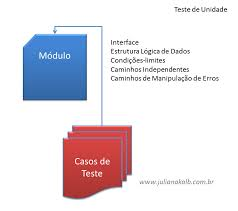

Os tipos de testes de software e sua características
por Camila Cardoso, 02/05/2019
1- INTRODUÇÃO
Concordamos que os testes são uma parte importante para obter um software de qualidade. É importante falar que eles não são feitos ao acaso e todos tem um porquê. Segundo Pressman (1995), os tipos de testes consistem em elaborar casos de testes capazes de varrer todo o software a procura de erros.
Dependendo para qual finalidade você está utilizando o seu teste, alguns se tornarão mais difíceis de serem implementados se forem colocados em uma etapa errada. Por isso, detalharemos sobre os principais tipos: teste unitário, de integração, de sistema, de aceitação, de regressão, de integridade de dados e de configuração e instalação.
2 - CONCEITO TEÓRICO
2.1- Teste de Unidade
De acordo com Pressman (1995), o teste de unidade focaliza o esforço de verificação na menor unidade de projeto, ou seja, o componente ou módulo de software. Wazlawick (2001) também fala que, o teste unitário ou de unidade, possibilita que cada módulo do sistema seja verificado de maneira individual.
Pressman (1995) também afirma que, a interface do módulo é testada para assegurar que as informações fluam corretamente para dentro e fora da unidade de programa que está em teste. A estrutura de dados local é examinada para garantir que os dados armazenados temporariamente mantenham sua integridade durante todos os passos quando um algoritmo for executado. Todos os caminhos independentes da estrutura de controle são usados para assegurar que todas as instruções em um módulo sejam executadas pelo menos uma vez. Por fim, são testados todos os caminhos de manipulação de erro.

Fonte: Google (2018)
Essa imagem consegue exemplificar a proposta do teste de unidade que é testar um único módulo do sistema de maneira individual.
2.2- Teste de Integração
O significado da palavra integração é ação de incorporar um elemento em um conjunto. Isso já ajuda a entender qual a finalidade do teste de integração que é testar as integrações entre as unidades. O objetivo é encontrar possíveis falhas entre os componentes internos de um sistema [5].
De acordo com Pressman (1995), o teste de integração é uma técnica sistemática para construir a arquitetura de software, ao mesmo tempo em que se realizam testes para descobrir erros associados às interfaces. Wazlawick (2011) diz que, o objetivo do teste de integração é verificar se os objetos se comunicam adequadamente. Isso pode ser feito de forma modular e sistemática. Estando os métodos básicos resolvidos, cabe verificar se os métodos delegados e operações de sistema funciona conforme o esperado.
Braga (2016) coloca que, de maneira geral, ocorre algumas etapas:
1- Primeiro, os módulos são testados de maneira individual através de testes unitários.
2- Em seguida, os módulos são agrupados para checagem de erros na interface entre eles para medir níveis de desempenho e confiabilidade.
3- Por último, todos os grupos de integração são testados por testes de sistema, que será visto no próximo tópico.
2.3- Teste de Sistema
Segundo Emerson Rios (2013), o teste de sistema visa executar o sistema como um todo ou um subsistema, dentro de um ambiente operacional controlado, para avaliar a exatidão e perfeição na execução de suas funções.
Wazlawick (2011) afirma que o teste de sistema são avaliados ao ponto de vista do usuário e por isso eles avaliam itens como, qualidade da interface gráfica, funcionamento correto das funções e etc.
2.4- Teste de Aceitação
Emerson Rios (2013) afirma que são teste finais de execução do sistema, realizados pelos usuários, visando verificar se o software está atendendo os requisitos e o objetivo do negócio, no que diz respeito a usabilidade e à funcionalidade. Segundo a IBM, são parecidos com os testes de sistema, porém com um foco maior voltado aos usuários.
2.5- Teste de Regressão
Tem como objetivo permitir que o software permaneça intacto após sofrer alterações. Graham, et al. (2007) diz que é a reaplicação de testes nas novas versões do sistema para verificar a existência de erros e corrigi-los.
2.6- Teste de Integridade de Dados
Braga (2016, p. 18) explica que são testes que consistem na validação da confiabilidade e da integridade dos dados. Garante a robustez do programa e sua capacidade de resistir a falhas.
2.7- Teste de Configuração e Instalação
São testes realizados para garantir que o sistema funcione em diversas plataformas sem a ocorrência de falhas.
3 - AS ABORDAGENS DE TESTE
Segundo Braga (2016, p.20) existem várias maneiras de se testar um software, porém existem técnicas específicas que são utilizadas em modelos de linguagens estruturadas. Essas técnicas de caixa-branca e caixa-preta são utilizadas quando um teste de estrutura lógica simples não suporta a complexidade do sistema.
3.1 - Teste de Caixa-Branca
É uma técnica que trabalha diretamente com o código fonte e permite que todos nós do programa sejam testados considerando apenas os resultados significativos.Por exemplo, um código que tenha muitos loops possuem muitos caminhos. O teste de caixa branca permite que apenas os caminhos lógicos relevantes sejam testados.
3.1 - Teste de Caixa-Preta
O teste de caixa-preta não avalia o comportamento interno do sistema, ou seja, ele avalia apenas entrada e saídas.Ele é feito por meio de comparação. Os dados de entrada são fornecidos e depois comparados com o resultado previamente esperado.
4 - CONCLUSÃO
Existem vários tipos de teste e cada um possui uma característica específica que vai te auxiliar na garantia da qualidade de software. Para determinar qual teste implementar, é preciso saber qual é a etapa do desenvolvimento de software que a sua aplicação se encontra. Dependendo da etapa, executar um tipo de teste pode se tornar uma tarefa complexa, ou seja, é importante ter conhecimento do conceito, características e aplicabilidades de cada tipo de teste. Além disso, existem também técnicas específicas que são utilizadas em modelos de linguagens estruturadas e elas são: teste de caixa preta e teste de caixa branca. Cada qual tem sua vantagem em uma aplicação, por exemplo, o teste de caixa branca é indicado em códigos que possuem muitos loops. Já o de caixa-preta está focadao em avaliar as entradas e saídas dos programas. Resumindo, é preciso conhecer a etapa na qual o software se encontra para conseguir escolher qual teste e qual técnica utilizar para aplicar no software e, assim, ter uma aplicação de qualidade.
REFERÊNCIAS BIBLIOGRÁFICAS
[1] BARBOSA, E. et al. Introdução ao Teste de Software.
[2] DEVMEDIA. Testes de software - Introdução. Disponível em:
[3] BRAGA, Pedro Henrique. Teste de Software. São Paulo: Pearson Education do Brasil, 2016.
[4] BARTIÉ, Alexandre. Garantia da Qualidade de Software: As melhores práticas de engenharia de Software aplicadas a sua empresa. São Paulo: Campus, 2002.
[5] Neto, Durvalino et al. GERENCIAMENTO E AUTOMAÇÃO DE TESTES PARA ALCANCE DA QUALIDADE DE SOFTWARE. Faculdade Integrada de Três Lagoas.
DE AMORIM, Deivison. et al. Gerenciamento de Teste de Software: Um comparativo entre Ferramentas Open Source. CESAR EDU, 2016.
RIOS, Emerson; MOREIRA, Trayahú. Teste de Software. Rio de Janeiro. Alta Books, 2013, 3 ed.
PÁDUA, Wilson. Engenharia de SoftwareRio de Janeiro. LTC Editora, 2 ed.
PRESSMAN, Roger; MAXIM, Bruce. Engenharia de Software. São Paulo, AMGH Editora Ltda, 2016, 8 ed.
CARVALHO, Márcio Filipe. AUTOMATIZAÇÃO DE TESTES DE SOFTWARE. Coimbra, 2010.